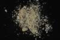

|
|
(For further information on spectroscopy, see:
http://speclab.cr.usgs.gov)
TITLE: Alunite_NH4+Jarosite NMNH145596A DESCRIPT 11111111112222222222333333333344444444445555555555666666666677777777778 12345678901234567890123456789012345678901234567890123456789012345678901234567890
DOCUMENTATION_FORMAT: MIXTURE
SAMPLE_ID: NMNH145596
MIXTURE_TYPE: Intimate
MIXTURE: Ammonioalunite + Jarosite
FORMULA: NH4Al3(SO4)2(OH)6
FORMULA_HTML: NH4Al3(SO4)2(OH)6
COLLECTION_LOCALITY: Geyers, California
ORIGINAL_DONOR: National Museum of Natural History
CURRENT_SAMPLE_LOCATION: USGS Denver Spectroscopy Laboratory
ULTIMATE_SAMPLE_LOCATION: USGS Denver Spectroscopy Laboratory
SAMPLE_DESCRIPTION:
The sample was a physical mixture of ammonioalunite, ammoniojarosite and amorphous silica. Grains for the sample for the current spectrum were hand-picked by G. Swayze. Weak absorptions due to jarosite at 0.6, 0.9, and 2.26 µm indicate some remaining contamination, but the spectrum shows beautiful ammonium bands in the 2-2.2 µm region. There are weak bands due to jarosite at 0.6, 0.9, and 2.26 µm.
IMAGE_OF_SAMPLE:

END_SAMPLE_DESCRIPTION.
XRD_ANALYSIS:
40 kV - 30 mA, 7.0-9.5 keV
File: amalnite.out, -.mdi
References: JCPDS #42-1334, 26-1014
Found: Ammonioalunite > ammoniojarosite; strong unidentified
reflection at 2.34 angstroms
Comment: Optically (in oil of refractive index 1.58) both the bulk sample and the sample used for the X-ray pattern appear to be composed on one phase of refractive index approximately 1.58. The c cell dimension of the jarosite is greater than that of Na-jarosite (compare GDS100, GDS101) and K-jarosite (compare GDS99), thus this jarosite is designated ammoniojarosite
J.S. Huebner, J. Pickrell, T. Schaefer, written communication (USGS)
END_XRD_ANALYSIS.
COMPOSITIONAL_ANALYSIS_TYPE: None # XRF, EM(WDS), ICP(Trace), WChem
COMPOSITION_TRACE: None
COMPOSITION_DISCUSSION:
END_COMPOSITION_DISCUSSION.
MICROSCOPIC_EXAMINATION:
END_MICROSCOPIC_EXAMINATION.
SPECTROSCOPIC_DISCUSSION:
The spectrum shows beautiful ammonium bands in the 2-2.2 µm region. There are weak bands due to jarosite at 0.6, 0.9, and 2.26 µm.
END_SPECTROSCOPIC_DISCUSSION.
SPECTRAL_PURITY: 1b2b3b4_ # 1= 0.2-3, 2= 1.5-6, 3= 6-25, 4= 20-150 microns
| LIB_SPECTRA_HED: | where | Wave Range | Av_Rs_Pwr | Comment |
|---|---|---|---|---|
| LIB_SPECTRA: | splib04a r 271 | 0.2-3.0µm | 200 | g.s.= |
| LIB_SPECTRA: | splib05a r 829 | 1.5-25 µm | 250 | g.s.= |
| LIB_SPECTRA: | splib06a r 24175 | g.s.= | ||
| LIB_SPECTRA: | splib06a r 24187 | g.s.= | ||
| LIB_SPECTRA: | splib06a r 24230 | g.s.= |
{kind=link}